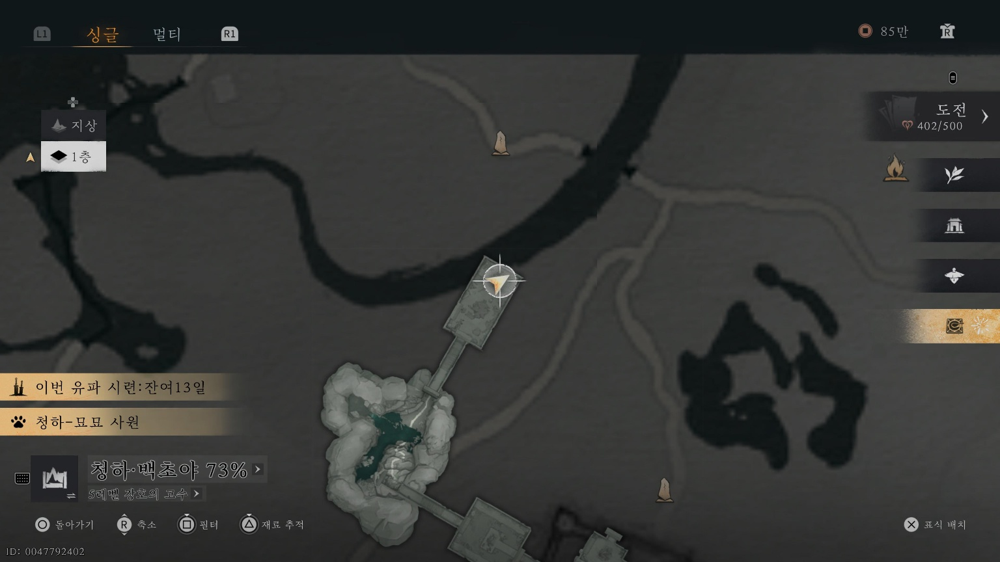
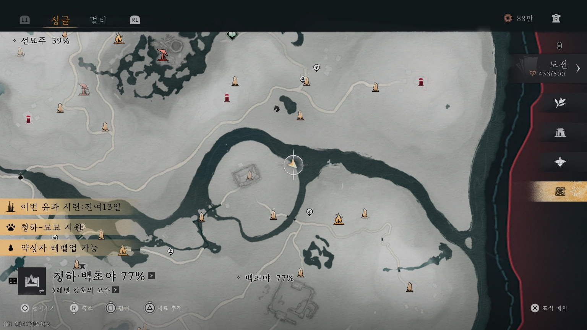

가이드
장군사당 지역 탐색
장군사당 지역 100% 달성 가이드
경계석 (2개)
- 장군 사당 바깥에서 찾을 수 있습니다.
- 장군 사당 지하 1층에서 찾을 수 있습니다.
낚시 대결 (1개)
장군 사당 북쪽 강가에 있는 왕운연과 낚시 대결에서 승리

투호 (1개)
장군 사당 뒤뜰에 있는 송희저와 투호 대결 후 승리하면 됩니다.

묘묘냥 (2개)
묘묘냥 위치는 지도를 통해 확인 가능합니다.
- 첫 번째 묘묘냥: 불상을 옮겨 왼쪽에 불상이 모여있는 곳에 내려놓기
- 두 번째 묘묘냥: 영기 모으기

유물 (1개)
북맹유적 지하에서 문서를 발견 후 읽으면 완료됩니다.




사건 (1개)
자동 완성되는 사건으로 처음 장군 사당에 진입 시 말을 훔쳐가는 도적 처리 후 획득
야영지 (4개)
- 첫 번째 야영지: 경계석 바로 오른쪽에 있음
- 두 번째 야영지: 경계석에서 왼쪽으로 가다보면 발견
- 세 번째 야영지: 장군사당 뒤쪽
- 네 번째 야영지: 장군사당 오른쪽 강가


강호의 벗 (6명)
기존에는 정해진 인물이 있었는데 패치가 되었는지 아래 인원으로만 완료되었습니다. 만약 완료가 되지 않는다면 방욱, 초연화, 채팔건, 조현원, 복운모, 왕운연을 완료해보세요.
- 방욱: 대화를 통해 의기투합 한다
- 초연화: 대화를 통해 의기투합 한다
- 채팔건: 대화를 통해 의기투합 한다 (채팔건이 보이지 않는다면 주변 나무를 베고 시진을 돌리면 된다고 합니다)
- 두교선: 사당 만인 전투 중 승리 시 자동 완료 됩니다.
- 조헌원: 대화를 통해 의기투합 한다.
- 공손 영감: 사당 만인 전투 중 승리 시 자동 완료 됩니다.


보물 상자 (20개)
1~4번째 상자
* 4개의 상자는 야영지 처리 후 획득할 수 있습니다.
5번째 상자
태극으로 곰 처리 후 획득

6번째 상자
장치에 무쇠 낙하를 통해 사당 문을 열어 획득


7번째 상자
언덕 위 종이 보이는 장소에서 획득

8번째 상자
사당 입구 등불 앞에서 획득

9번째 상자
사당 들어가기전 건초 더미에서 획득

10번째 상자
복운엽이 앉아있는 건물 안에서 획득


11번째 상자
사당 안 석상 옆에서 획득

12번째 상자

13번째 상자

14번째 상자

15번째 상자

16번째 상자

17번째 상자

18번째 상자

19번째 상자

20번째 상자